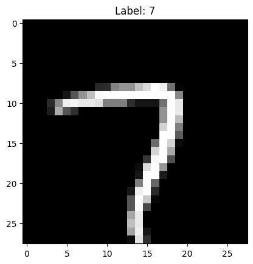
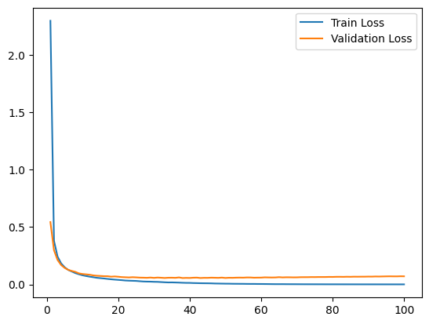

import torch
import torch.nn as nn
from torchinfo import summary
SEED = 10
torch.manual_seed(SEED)
torch.cuda.manual_seed(SEED)from sklearn.datasets import fetch_openml
df, target = fetch_openml("mnist_784", return_X_y=True)
print(f"Shape X: {df.shape}")
print(f"Shape y: {target.shape}")Shape X: (70000, 784)
Shape y: (70000,)from sklearn.model_selection import train_test_split
import matplotlib.pyplot as plt
X_train, X_test, y_train, y_test = train_test_split(
df, target, test_size=0.25, random_state=SEED
)from torch.utils.data import DataLoader, Dataset
class MNIST(Dataset):
def __init__(self, X, y):
self.X = X.to_numpy()
self.y = y.values
def __len__(self):
return len(self.X)
def __getitem__(self, idx):
return dict(
X=torch.tensor(self.X[idx], dtype=torch.float32)
.view(28, 28)
.unsqueeze(0),
y=torch.tensor(int(self.y[idx]), dtype=torch.long),
)
train_set = MNIST(X_train, y_train)
test_set = MNIST(X_test, y_test)def plot_number(X, y, tensor=True):
if tensor:
X = X.numpy().squeeze(0)
y = y.item()
plt.imshow(X, cmap="gray")
plt.title(f"Label: {y:.0f}")
plt.show()
idx = torch.randint(0, len(train_set), (1,)).item()
plot_number(train_set[idx]["X"], train_set[idx]["y"])
train_set[0]["X"].shape, train_set[0]["y"].shape(torch.Size([1, 28, 28]), torch.Size([]))class CNN(nn.Module):
def __init__(self, in_channels=1, n_outputs=10, ks=3):
super().__init__()
self.conv1 = self.CNN_block(in_channels, 64, k=ks)
self.conv2 = self.CNN_block(64, 32, k=ks)
self.flatten = nn.Flatten()
# self.fc1 = nn.LazyLinear(32)
self.fc1 = nn.Linear(32 * 5 * 5, 16) # filtros x tamaño
self.fc2 = nn.Linear(16, n_outputs)
def forward(self, x):
x = self.conv1(x)
x = self.conv2(x)
x = self.flatten(x)
x = self.fc1(x)
x = self.fc2(x)
return x
@staticmethod
def CNN_block(c_in, c_out, k=3, p=0, s=1, pk=2, ps=2):
return nn.Sequential(
nn.Conv2d(
in_channels=c_in,
out_channels=c_out,
kernel_size=k,
padding=p,
stride=s,
),
nn.ReLU(),
nn.MaxPool2d(kernel_size=pk, stride=ps),
)
model = CNN(in_channels=1, n_outputs=10)
summary(model, input_size=(1, 1, 28, 28))==========================================================================================
Layer (type:depth-idx) Output Shape Param #
==========================================================================================
CNN [1, 10] --
├─Sequential: 1-1 [1, 64, 13, 13] --
│ └─Conv2d: 2-1 [1, 64, 26, 26] 640
│ └─ReLU: 2-2 [1, 64, 26, 26] --
│ └─MaxPool2d: 2-3 [1, 64, 13, 13] --
├─Sequential: 1-2 [1, 32, 5, 5] --
│ └─Conv2d: 2-4 [1, 32, 11, 11] 18,464
│ └─ReLU: 2-5 [1, 32, 11, 11] --
│ └─MaxPool2d: 2-6 [1, 32, 5, 5] --
├─Flatten: 1-3 [1, 800] --
├─Linear: 1-4 [1, 16] 12,816
├─Linear: 1-5 [1, 10] 170
==========================================================================================
Total params: 32,090
Trainable params: 32,090
Non-trainable params: 0
Total mult-adds (Units.MEGABYTES): 2.68
==========================================================================================
Input size (MB): 0.00
Forward/backward pass size (MB): 0.38
Params size (MB): 0.13
Estimated Total Size (MB): 0.51
==========================================================================================import torchmetrics
import numpy as np
import time
device = torch.device("cuda" if torch.cuda.is_available() else "cpu")
print(f"Training in {device}")
model = CNN(in_channels=1, n_outputs=10).to(device)
criterion = nn.CrossEntropyLoss()
optimizer = torch.optim.Adam(model.parameters(), lr=3e-4)
EPOCHS = 100
train_dataloader = DataLoader(
train_set,
batch_size=1024,
shuffle=True,
pin_memory=True,
num_workers=10,
drop_last=True,
)
test_dataloader = DataLoader(
test_set, batch_size=32, shuffle=False, pin_memory=True, num_workers=10
)
train_metric = torchmetrics.Recall(task="multiclass", num_classes=10).to(
device
)
test_metric = torchmetrics.Recall(task="multiclass", num_classes=10).to(
device
)
train_losses = []
test_losses = []
for e in range(EPOCHS):
start_time = time.time()
train_batch_losses = []
test_batch_losses = []
for batch in train_dataloader:
X, y = batch["X"].to(device), batch["y"].to(device)
optimizer.zero_grad()
y_pred = model(X)
loss = criterion(y_pred, y)
loss.backward()
optimizer.step()
tm = train_metric(y_pred, y)
train_batch_losses.append(loss.item())
tm = train_metric.compute()
train_epoch_loss = np.mean(train_batch_losses)
with torch.no_grad():
for batch in test_dataloader:
X, y = batch["X"].to(device), batch["y"].to(device)
y_pred = model(X)
loss = criterion(y_pred, y)
tst_m = test_metric(y_pred, y)
test_batch_losses.append(loss.item())
tst_m = test_metric.compute()
test_epoch_loss = np.mean(test_batch_losses)
end_time = time.time()
train_losses.append(train_epoch_loss)
test_losses.append(test_epoch_loss)
epoch_time = end_time - start_time
## Logging
print(
f"Epoch: {e+1}- time: {epoch_time:.2f} - Train Loss: {train_epoch_loss:.4f} - Test Loss: {test_epoch_loss:.4f}- Train Recall: {tm:.4f} - Test Recall: {tst_m:.4f}"
)Training in cuda
Epoch: 0- time: 2.61 - Train Loss: 2.2997 - Test Loss: 0.5438- Train Recall: 0.5871 - Test Recall: 0.8500
Epoch: 1- time: 2.42 - Train Loss: 0.3812 - Test Loss: 0.2982- Train Recall: 0.7392 - Test Recall: 0.8828
Epoch: 2- time: 2.36 - Train Loss: 0.2428 - Test Loss: 0.2133- Train Recall: 0.8029 - Test Recall: 0.9012
Epoch: 3- time: 2.38 - Train Loss: 0.1837 - Test Loss: 0.1690- Train Recall: 0.8386 - Test Recall: 0.9129
Epoch: 4- time: 2.35 - Train Loss: 0.1494 - Test Loss: 0.1438- Train Recall: 0.8620 - Test Recall: 0.9216
Epoch: 5- time: 2.37 - Train Loss: 0.1264 - Test Loss: 0.1268- Train Recall: 0.8788 - Test Recall: 0.9283
Epoch: 6- time: 2.36 - Train Loss: 0.1122 - Test Loss: 0.1174- Train Recall: 0.8912 - Test Recall: 0.9337
Epoch: 7- time: 2.38 - Train Loss: 0.0984 - Test Loss: 0.1093- Train Recall: 0.9011 - Test Recall: 0.9379
Epoch: 8- time: 2.34 - Train Loss: 0.0883 - Test Loss: 0.0962- Train Recall: 0.9091 - Test Recall: 0.9415
Epoch: 9- time: 2.39 - Train Loss: 0.0796 - Test Loss: 0.0907- Train Recall: 0.9157 - Test Recall: 0.9446
Epoch: 10- time: 2.42 - Train Loss: 0.0732 - Test Loss: 0.0878- Train Recall: 0.9213 - Test Recall: 0.9472
Epoch: 11- time: 2.41 - Train Loss: 0.0675 - Test Loss: 0.0845- Train Recall: 0.9261 - Test Recall: 0.9495
Epoch: 12- time: 2.36 - Train Loss: 0.0628 - Test Loss: 0.0786- Train Recall: 0.9303 - Test Recall: 0.9515
Epoch: 13- time: 2.34 - Train Loss: 0.0577 - Test Loss: 0.0756- Train Recall: 0.9340 - Test Recall: 0.9534
Epoch: 14- time: 2.39 - Train Loss: 0.0547 - Test Loss: 0.0738- Train Recall: 0.9373 - Test Recall: 0.9550
Epoch: 15- time: 2.42 - Train Loss: 0.0516 - Test Loss: 0.0718- Train Recall: 0.9403 - Test Recall: 0.9565
Epoch: 16- time: 2.43 - Train Loss: 0.0480 - Test Loss: 0.0715- Train Recall: 0.9429 - Test Recall: 0.9578
Epoch: 17- time: 2.42 - Train Loss: 0.0447 - Test Loss: 0.0675- Train Recall: 0.9454 - Test Recall: 0.9590
Epoch: 18- time: 2.35 - Train Loss: 0.0419 - Test Loss: 0.0694- Train Recall: 0.9476 - Test Recall: 0.9601
Epoch: 19- time: 2.39 - Train Loss: 0.0396 - Test Loss: 0.0670- Train Recall: 0.9496 - Test Recall: 0.9611
Epoch: 20- time: 2.35 - Train Loss: 0.0371 - Test Loss: 0.0637- Train Recall: 0.9515 - Test Recall: 0.9620
Epoch: 21- time: 2.36 - Train Loss: 0.0340 - Test Loss: 0.0623- Train Recall: 0.9532 - Test Recall: 0.9629
Epoch: 22- time: 2.38 - Train Loss: 0.0325 - Test Loss: 0.0609- Train Recall: 0.9548 - Test Recall: 0.9637
Epoch: 23- time: 2.38 - Train Loss: 0.0315 - Test Loss: 0.0629- Train Recall: 0.9563 - Test Recall: 0.9645
Epoch: 24- time: 2.37 - Train Loss: 0.0304 - Test Loss: 0.0613- Train Recall: 0.9577 - Test Recall: 0.9651
Epoch: 25- time: 2.38 - Train Loss: 0.0278 - Test Loss: 0.0593- Train Recall: 0.9591 - Test Recall: 0.9658
Epoch: 26- time: 2.36 - Train Loss: 0.0256 - Test Loss: 0.0587- Train Recall: 0.9603 - Test Recall: 0.9664
Epoch: 27- time: 2.34 - Train Loss: 0.0246 - Test Loss: 0.0577- Train Recall: 0.9615 - Test Recall: 0.9670
Epoch: 28- time: 2.33 - Train Loss: 0.0241 - Test Loss: 0.0599- Train Recall: 0.9626 - Test Recall: 0.9676
Epoch: 29- time: 2.37 - Train Loss: 0.0228 - Test Loss: 0.0572- Train Recall: 0.9636 - Test Recall: 0.9681
Epoch: 30- time: 2.34 - Train Loss: 0.0222 - Test Loss: 0.0598- Train Recall: 0.9646 - Test Recall: 0.9686
Epoch: 31- time: 2.33 - Train Loss: 0.0203 - Test Loss: 0.0582- Train Recall: 0.9655 - Test Recall: 0.9690
Epoch: 32- time: 2.36 - Train Loss: 0.0186 - Test Loss: 0.0561- Train Recall: 0.9664 - Test Recall: 0.9695
Epoch: 33- time: 2.34 - Train Loss: 0.0172 - Test Loss: 0.0583- Train Recall: 0.9673 - Test Recall: 0.9699
Epoch: 34- time: 2.33 - Train Loss: 0.0175 - Test Loss: 0.0585- Train Recall: 0.9681 - Test Recall: 0.9703
Epoch: 35- time: 2.36 - Train Loss: 0.0167 - Test Loss: 0.0575- Train Recall: 0.9688 - Test Recall: 0.9706
Epoch: 36- time: 2.38 - Train Loss: 0.0157 - Test Loss: 0.0609- Train Recall: 0.9696 - Test Recall: 0.9710
Epoch: 37- time: 2.40 - Train Loss: 0.0143 - Test Loss: 0.0557- Train Recall: 0.9703 - Test Recall: 0.9713
Epoch: 38- time: 2.37 - Train Loss: 0.0134 - Test Loss: 0.0569- Train Recall: 0.9710 - Test Recall: 0.9717
Epoch: 39- time: 2.32 - Train Loss: 0.0132 - Test Loss: 0.0563- Train Recall: 0.9716 - Test Recall: 0.9720
Epoch: 40- time: 2.33 - Train Loss: 0.0118 - Test Loss: 0.0585- Train Recall: 0.9722 - Test Recall: 0.9723
Epoch: 41- time: 2.35 - Train Loss: 0.0112 - Test Loss: 0.0593- Train Recall: 0.9728 - Test Recall: 0.9725
Epoch: 42- time: 2.38 - Train Loss: 0.0104 - Test Loss: 0.0559- Train Recall: 0.9734 - Test Recall: 0.9728
Epoch: 43- time: 2.34 - Train Loss: 0.0100 - Test Loss: 0.0574- Train Recall: 0.9740 - Test Recall: 0.9731
Epoch: 44- time: 2.32 - Train Loss: 0.0097 - Test Loss: 0.0572- Train Recall: 0.9745 - Test Recall: 0.9733
Epoch: 45- time: 2.34 - Train Loss: 0.0092 - Test Loss: 0.0588- Train Recall: 0.9750 - Test Recall: 0.9736
Epoch: 46- time: 2.37 - Train Loss: 0.0080 - Test Loss: 0.0582- Train Recall: 0.9755 - Test Recall: 0.9738
Epoch: 47- time: 2.39 - Train Loss: 0.0075 - Test Loss: 0.0574- Train Recall: 0.9760 - Test Recall: 0.9740
Epoch: 48- time: 2.35 - Train Loss: 0.0070 - Test Loss: 0.0594- Train Recall: 0.9765 - Test Recall: 0.9742
Epoch: 49- time: 2.41 - Train Loss: 0.0064 - Test Loss: 0.0563- Train Recall: 0.9769 - Test Recall: 0.9745
Epoch: 50- time: 2.39 - Train Loss: 0.0062 - Test Loss: 0.0581- Train Recall: 0.9774 - Test Recall: 0.9747
Epoch: 51- time: 2.38 - Train Loss: 0.0056 - Test Loss: 0.0577- Train Recall: 0.9778 - Test Recall: 0.9749
Epoch: 52- time: 2.40 - Train Loss: 0.0053 - Test Loss: 0.0589- Train Recall: 0.9782 - Test Recall: 0.9751
Epoch: 53- time: 2.40 - Train Loss: 0.0051 - Test Loss: 0.0595- Train Recall: 0.9786 - Test Recall: 0.9753
Epoch: 54- time: 2.37 - Train Loss: 0.0050 - Test Loss: 0.0589- Train Recall: 0.9790 - Test Recall: 0.9754
Epoch: 55- time: 2.31 - Train Loss: 0.0044 - Test Loss: 0.0606- Train Recall: 0.9793 - Test Recall: 0.9756
Epoch: 56- time: 2.33 - Train Loss: 0.0043 - Test Loss: 0.0605- Train Recall: 0.9797 - Test Recall: 0.9758
Epoch: 57- time: 2.33 - Train Loss: 0.0043 - Test Loss: 0.0585- Train Recall: 0.9800 - Test Recall: 0.9759
Epoch: 58- time: 2.31 - Train Loss: 0.0038 - Test Loss: 0.0592- Train Recall: 0.9804 - Test Recall: 0.9761
Epoch: 59- time: 2.35 - Train Loss: 0.0037 - Test Loss: 0.0595- Train Recall: 0.9807 - Test Recall: 0.9763
Epoch: 60- time: 2.32 - Train Loss: 0.0034 - Test Loss: 0.0616- Train Recall: 0.9810 - Test Recall: 0.9764
Epoch: 61- time: 2.32 - Train Loss: 0.0031 - Test Loss: 0.0609- Train Recall: 0.9813 - Test Recall: 0.9765
Epoch: 62- time: 2.31 - Train Loss: 0.0026 - Test Loss: 0.0603- Train Recall: 0.9816 - Test Recall: 0.9767
Epoch: 63- time: 2.33 - Train Loss: 0.0023 - Test Loss: 0.0608- Train Recall: 0.9819 - Test Recall: 0.9768
Epoch: 64- time: 2.31 - Train Loss: 0.0023 - Test Loss: 0.0632- Train Recall: 0.9822 - Test Recall: 0.9770
Epoch: 65- time: 2.35 - Train Loss: 0.0024 - Test Loss: 0.0611- Train Recall: 0.9824 - Test Recall: 0.9771
Epoch: 66- time: 2.35 - Train Loss: 0.0020 - Test Loss: 0.0622- Train Recall: 0.9827 - Test Recall: 0.9772
Epoch: 67- time: 2.36 - Train Loss: 0.0019 - Test Loss: 0.0621- Train Recall: 0.9829 - Test Recall: 0.9773
Epoch: 68- time: 2.34 - Train Loss: 0.0019 - Test Loss: 0.0614- Train Recall: 0.9832 - Test Recall: 0.9775
Epoch: 69- time: 2.36 - Train Loss: 0.0017 - Test Loss: 0.0616- Train Recall: 0.9834 - Test Recall: 0.9776
Epoch: 70- time: 2.35 - Train Loss: 0.0015 - Test Loss: 0.0630- Train Recall: 0.9837 - Test Recall: 0.9777
Epoch: 71- time: 2.32 - Train Loss: 0.0014 - Test Loss: 0.0632- Train Recall: 0.9839 - Test Recall: 0.9778
Epoch: 72- time: 2.36 - Train Loss: 0.0014 - Test Loss: 0.0632- Train Recall: 0.9841 - Test Recall: 0.9779
Epoch: 73- time: 2.36 - Train Loss: 0.0013 - Test Loss: 0.0641- Train Recall: 0.9843 - Test Recall: 0.9780
Epoch: 74- time: 2.39 - Train Loss: 0.0012 - Test Loss: 0.0638- Train Recall: 0.9845 - Test Recall: 0.9781
Epoch: 75- time: 2.39 - Train Loss: 0.0012 - Test Loss: 0.0645- Train Recall: 0.9847 - Test Recall: 0.9782
Epoch: 76- time: 2.37 - Train Loss: 0.0012 - Test Loss: 0.0645- Train Recall: 0.9849 - Test Recall: 0.9783
Epoch: 77- time: 2.40 - Train Loss: 0.0010 - Test Loss: 0.0645- Train Recall: 0.9851 - Test Recall: 0.9784
Epoch: 78- time: 2.31 - Train Loss: 0.0010 - Test Loss: 0.0655- Train Recall: 0.9853 - Test Recall: 0.9785
Epoch: 79- time: 2.35 - Train Loss: 0.0010 - Test Loss: 0.0652- Train Recall: 0.9855 - Test Recall: 0.9786
Epoch: 80- time: 2.39 - Train Loss: 0.0009 - Test Loss: 0.0662- Train Recall: 0.9857 - Test Recall: 0.9787
Epoch: 81- time: 2.32 - Train Loss: 0.0009 - Test Loss: 0.0664- Train Recall: 0.9859 - Test Recall: 0.9788
Epoch: 82- time: 2.33 - Train Loss: 0.0008 - Test Loss: 0.0659- Train Recall: 0.9860 - Test Recall: 0.9789
Epoch: 83- time: 2.33 - Train Loss: 0.0008 - Test Loss: 0.0669- Train Recall: 0.9862 - Test Recall: 0.9790
Epoch: 84- time: 2.30 - Train Loss: 0.0007 - Test Loss: 0.0664- Train Recall: 0.9864 - Test Recall: 0.9791
Epoch: 85- time: 2.34 - Train Loss: 0.0007 - Test Loss: 0.0674- Train Recall: 0.9865 - Test Recall: 0.9792
Epoch: 86- time: 2.34 - Train Loss: 0.0007 - Test Loss: 0.0671- Train Recall: 0.9867 - Test Recall: 0.9792
Epoch: 87- time: 2.47 - Train Loss: 0.0006 - Test Loss: 0.0675- Train Recall: 0.9868 - Test Recall: 0.9793
Epoch: 88- time: 2.28 - Train Loss: 0.0006 - Test Loss: 0.0676- Train Recall: 0.9870 - Test Recall: 0.9794
Epoch: 89- time: 2.31 - Train Loss: 0.0006 - Test Loss: 0.0684- Train Recall: 0.9871 - Test Recall: 0.9795
Epoch: 90- time: 2.29 - Train Loss: 0.0005 - Test Loss: 0.0681- Train Recall: 0.9873 - Test Recall: 0.9795
Epoch: 91- time: 2.36 - Train Loss: 0.0005 - Test Loss: 0.0692- Train Recall: 0.9874 - Test Recall: 0.9796
Epoch: 92- time: 2.37 - Train Loss: 0.0005 - Test Loss: 0.0687- Train Recall: 0.9875 - Test Recall: 0.9797
Epoch: 93- time: 2.38 - Train Loss: 0.0005 - Test Loss: 0.0695- Train Recall: 0.9877 - Test Recall: 0.9797
Epoch: 94- time: 2.36 - Train Loss: 0.0005 - Test Loss: 0.0702- Train Recall: 0.9878 - Test Recall: 0.9798
Epoch: 95- time: 2.39 - Train Loss: 0.0005 - Test Loss: 0.0706- Train Recall: 0.9879 - Test Recall: 0.9799
Epoch: 96- time: 2.39 - Train Loss: 0.0004 - Test Loss: 0.0702- Train Recall: 0.9880 - Test Recall: 0.9799
Epoch: 97- time: 2.39 - Train Loss: 0.0004 - Test Loss: 0.0701- Train Recall: 0.9882 - Test Recall: 0.9800
Epoch: 98- time: 2.30 - Train Loss: 0.0004 - Test Loss: 0.0711- Train Recall: 0.9883 - Test Recall: 0.9801
Epoch: 99- time: 2.38 - Train Loss: 0.0004 - Test Loss: 0.0707- Train Recall: 0.9884 - Test Recall: 0.9801def plot_training_curves(train_loss, validation_loss, n_epochs, title=""):
plt.plot(
range(1, n_epochs + 1),
train_loss,
label="Train Loss",
)
plt.plot(
range(1, n_epochs + 1),
validation_loss,
label="Validation Loss",
)
plt.title(title)
plt.legend()
plt.show()
plot_training_curves(train_losses, test_losses, EPOCHS)